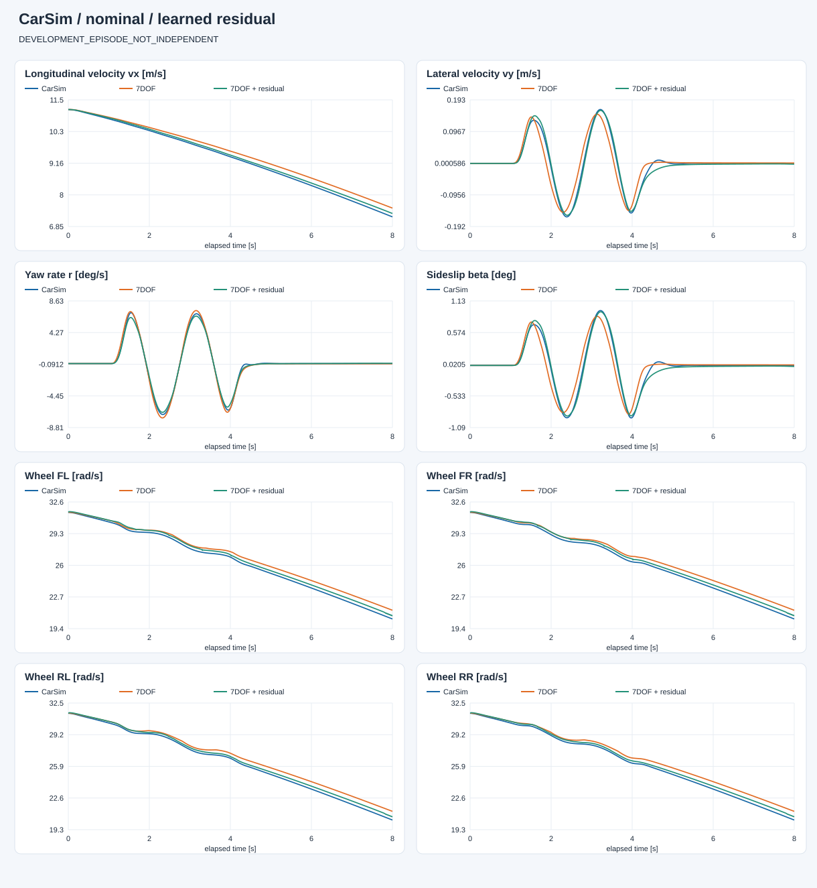
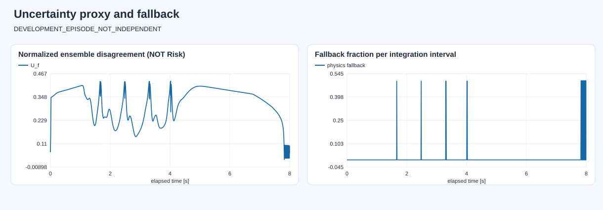

E:\modelcodeE\DRL_MPC\DRL_MPC\carsim_rl\artifacts\dynamics7dof\open_loop_20260928_094104_829627\capture
数据角色：DEVELOPMENT_EPISODE_NOT_INDEPENDENT。 蓝色为 CarSim，橙色为原模型，绿色为学习补偿。两种模型都只初始化一次，不重置到真值。 共同有效覆盖率：100.0%。训练回合改善不等于泛化；已用于设计修改的开发对照回合也不是独立验证。 未接管控制、未生成 Risk 标签；高分歧/超范围回退只是工程防护，不是安全证明。

| 状态 | 原模型 RMSE | 补偿 RMSE | 原模型 MAE | 补偿 MAE |
|---|---|---|---|---|
| vx_m_s | 0.21261768344188506 | 0.07416348938577591 | 0.19219706131894218 | 0.06851472487531624 |
| vy_m_s | 0.022420677145061473 | 0.008040793587392606 | 0.013620327008419074 | 0.00546071742359371 |
| yaw_rate_rad_s | 0.004009878659785544 | 0.0033502936214075503 | 0.0023810025972229977 | 0.0020116950503014895 |
| omega_fl_rad_s | 0.5972244386763719 | 0.2853896073390119 | 0.5328839004154126 | 0.2781958748708756 |
| omega_fr_rad_s | 0.5941642355754182 | 0.28255356940219567 | 0.5312763880836757 | 0.27510511413892896 |
| omega_rl_rad_s | 0.5940219418158864 | 0.24883826137401008 | 0.5310435404466974 | 0.23703057424094 |
| omega_rr_rad_s | 0.5914686213552607 | 0.2484679236512951 | 0.5295376110636127 | 0.23614655360318268 |
转向前、正弦输入期间、转向结束 0.5 s 后分别统计；末段不保证已经达到平衡。
| 阶段 | 状态 | 样本 | 原模型 | 补偿 |
|---|---|---|---|---|
| before_steering | vx_m_s | 900 | 0.037211248594000546 | 0.02360459085191726 |
| before_steering | vy_m_s | 900 | 6.421090618158828e-16 | 1.7858405114317985e-15 |
| before_steering | yaw_rate_rad_s | 900 | 2.675408617364025e-16 | 6.001290850269025e-16 |
| steering_active | vx_m_s | 3333 | 0.15173104060639372 | 0.05483319903950693 |
| steering_active | vy_m_s | 3333 | 0.034181744758002 | 0.008500224212327462 |
| steering_active | yaw_rate_rad_s | 3333 | 0.005959233926134588 | 0.005021280516591178 |
| after_steering_plus_0p5s | vx_m_s | 3167 | 0.28278641400724325 | 0.09886881578599947 |
| after_steering_plus_0p5s | vy_m_s | 3167 | 0.001778546929096263 | 0.003113710261570021 |
| after_steering_plus_0p5s | yaw_rate_rad_s | 3167 | 0.00047734094961506034 | 0.00047954623332108437 |

连续积分平均回退比例：0.004177215189873418；与实测状态上的逐点诊断回退比例不是同一指标。
完整指标见 evaluation.json。低网络分歧不保证低真实误差，尚未完成不确定性校准。